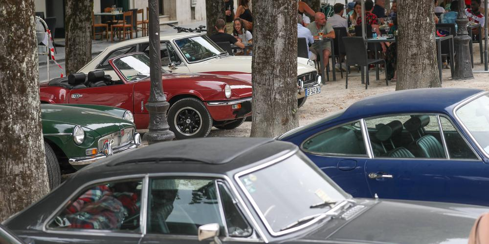

Présentation de l'association
Rust-eze est une association qui regroupe les vehicule de collection dans le département des Landes.Dans tout le département des évenement sont disponible au moins une fois par semaine
Vous avez également un garagesur la zone de Mont-De-Marsan pour aider à réparer votre vehicule si vous êtes en manques de fonds.

en effet tout les dimanche vous pouvez retrouvez un rassemblement sur un lieu toujours différent. au rendez-vous :
Belle voiture, barbecue, discussion, joie de vivre.
Nous nous efforçont également de crée des évenement sur Nogaro pour rouler nos meilleur vehicule en parade sur le circuit avec un plus gros public et sur une journée complète.
Evidement plein d'autre type d'évenement sont disponible et seront actualisé sur le planning.
Évenement de l'association
Pour ce qui est des évenement comme dis plus haut il y a un minimum par semaine,en effet tout les dimanche vous pouvez retrouvez un rassemblement sur un lieu toujours différent. au rendez-vous :
Belle voiture, barbecue, discussion, joie de vivre.
Nous nous efforçont également de crée des évenement sur Nogaro pour rouler nos meilleur vehicule en parade sur le circuit avec un plus gros public et sur une journée complète.
Evidement plein d'autre type d'évenement sont disponible et seront actualisé sur le planning.

L'histoire de l'association
Notre association est sur loi 1901 vous pouvez y adérez chaques mois à hauteur de 5 euros pour financer des réparation au garage pour des gens dans le besoin et accès à de nombreux évenement.L'association à été crée en 2004 par Jean-Luc Du Pont résident sur Grenade-sur-l'adour il à étant accompagner de Yves Durant tout les deux voulant ouvrir un garage pour tout le monde pour appuyer le soucis des pannes sur les vehicule d'époque.